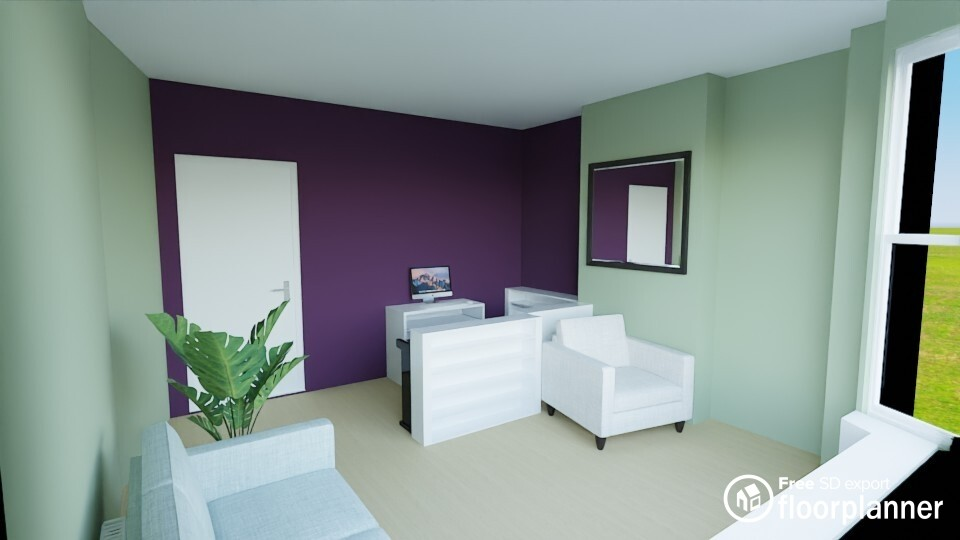
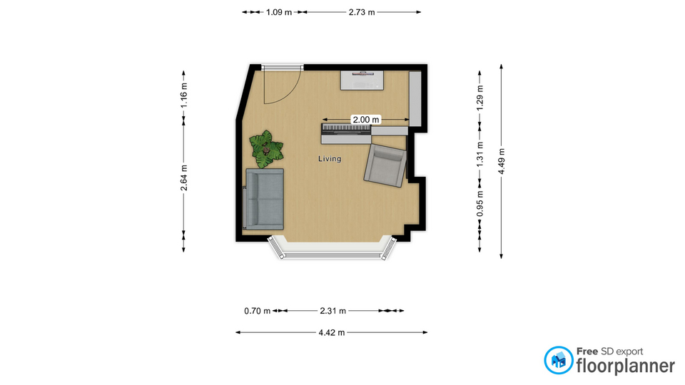
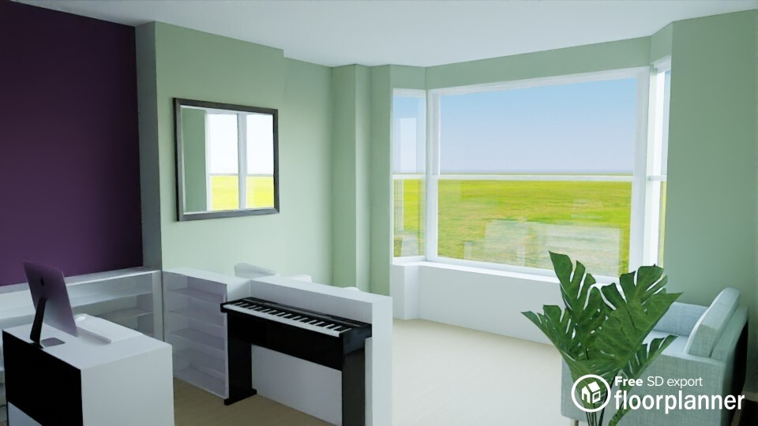

Furnishings
Ideas for the music/production zone, living zone, instruments, mirror, shelves and Marvel comics display.
Personal Music Story
Make The Music Zone Feel Like Michael
This room should not feel like a generic home studio. Michael has a strong music and theatre background, including music production work, theatre-related music, and time with The Flying Pickets and The Grasshoppers. The aubergine back wall/music zone should feel creative, personal and performance-led.
- Use the aubergine or brown-aubergine wall as a stage-like backdrop for the computer, electric piano and production setup.
- Add shelves for music books, theatre notes, small framed memorabilia, headphones and production accessories.
- Display the 3 guitars as part of the room’s story, not just as storage.
- Keep the clarinet safely stored or displayed away from heat, moisture and direct sunlight.
- Consider one small framed section for Flying Pickets, Grasshoppers or theatre/music memories.
- Use warm lamp light, brass/aged gold frames and dark wood to make the music area feel cosy and theatrical.
Furnishing Visuals

Relaxing zone concept with softer seating and calmer colours.

Furnishing floorplan showing how the zones can be split.

Music/production zone concept for computer, electric piano and shelving.
Room Zoning
Music / Production Zone
Use the back wall/back alcove as the aubergine or brown-aubergine feature area. This zone should hold the computer setup, electric piano, production shelves, lighting and cable management.
Living / Relaxing Zone
Keep the main seating area calmer with Lichen Green walls, cream textiles, warm wood and a rug. Use low shelves as a soft divider so the room still feels open.
Music Zone Ideas
Computer & Electric Piano
- Place the desk and electric piano along or near the aubergine back wall where it feels intentional.
- Use a slim desk, keyboard stand or integrated workstation to avoid overcrowding.
- Add warm task lighting for evening production work.
- Use cable trunking, clips and a small cable box to keep leads hidden.
Shelves for Production Gear
- Use floating shelves or slim wall shelves for headphones, notebooks, cables and small equipment.
- Keep heavier equipment on low units rather than high wall shelves.
- Use labelled storage boxes so the music zone stays creative, not messy.
Instruments
3 Guitars
Use the guitars as a wall feature, but keep spacing generous. A staggered three-guitar arrangement can look better than a tight row. Fix into suitable wall structure and avoid placing them above heat sources.
Clarinet
Keep the clarinet safe, dry and away from radiator heat or direct sun. A closed case on a shelf is the safest option; a display stand is only suitable if it will not be knocked.
Blocked Fireplace & Mirror
Mirror Above The Blocked Fireplace
A mirror above the blocked fireplace is a strong idea. Choose antique brass, aged gold, blackened bronze or warm wood. It will bounce light around the room and give the blocked fireplace wall a proper focal point without pretending there is an active fireplace.
Marvel Comics Display Ideas
Acrylic Display Table
A custom sealed clear acrylic display box or coffee-table style display could turn the Marvel collectible comics into a proper art piece in the living zone.
- Use UV-protective acrylic if possible.
- Keep comics in archival sleeves and backing boards.
- Avoid direct sunlight, moisture and heat.
- Make the display dust-protected and easy to open safely.
Alcove / Shelf Display
The other alcove or a calm living-zone shelving wall could hold a curated comic display using shallow ledges, frames or acrylic holders.
- Rotate the comics on show to reduce light exposure.
- Keep the display spaced and intentional, not cluttered.
- Avoid permanent adhesive on valuable comics.
Furniture & Soft Furnishings
Sofa / Armchair
Warm neutral, tan leather, oatmeal, muted olive, charcoal or soft rust would all work with Lichen Green and aubergine.
Rug
Use a rug to define the living zone. Look for cream, olive, rust, plum, tan and faded traditional patterns.
Curtains
Natural linen, warm off-white, olive, muted gold or soft patterned curtains will keep the room calm.
Lighting
Use warm lamps rather than only ceiling light. Brass, ceramic, smoked glass or blackened bronze will suit the scheme.
Wood Tones
Choose medium-to-dark warm wood for shelves, side tables and storage. Avoid very cold grey wood.
Accessories
Cushions and throws can bring in plum, rust, olive, cream, tan and natural woven textures.